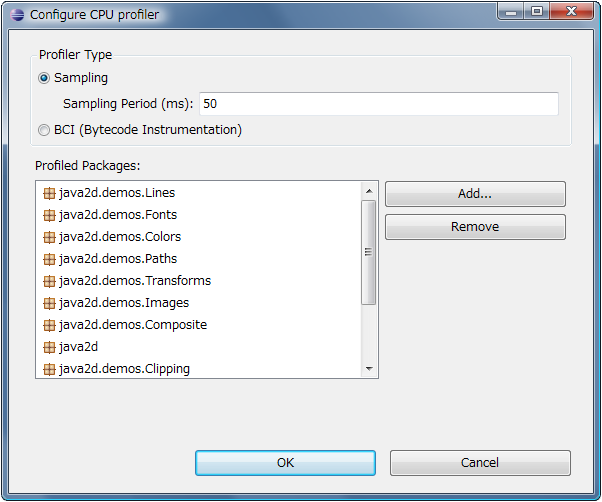

Configuring CPU profiler
To configure CPU profiler:
-
Open Configure CPU profiler dialog by clicking the link select profiled Java packages on CPU page.
Node: Once you specify Java packages to profile,
you can open the dialog with the context menu Configure CPU Profiler....

This dialog enables you to specify Java packages.
CPU profiler profiles the methods of classes belonging to the specified Java packages.
-
Open Package Selection dialog by clicking Add... button on Configure CPU Profiler dialog.
Select Java packages from the existing Java packages contained in currently opened projects in workspace,
and press OK.
-
There are two types of CPU profiler: Sampling and BCI (Bytecode Instrumentation).
Typically, you may first use the sampling profiler for quick analysis.
After you identify the area of code that has a bottleneck of performance,
you may narrow down the Java packages to profile, and use BCI profiler to get
more precise profiling data. Select profiler type, and press OK.
Note: The configuration will persist in workspace so that you don't have to configure CPU profiler
when restarting Eclipse.
Note: The configuration can be dynamically applied to JVM even while running CPU profiler.